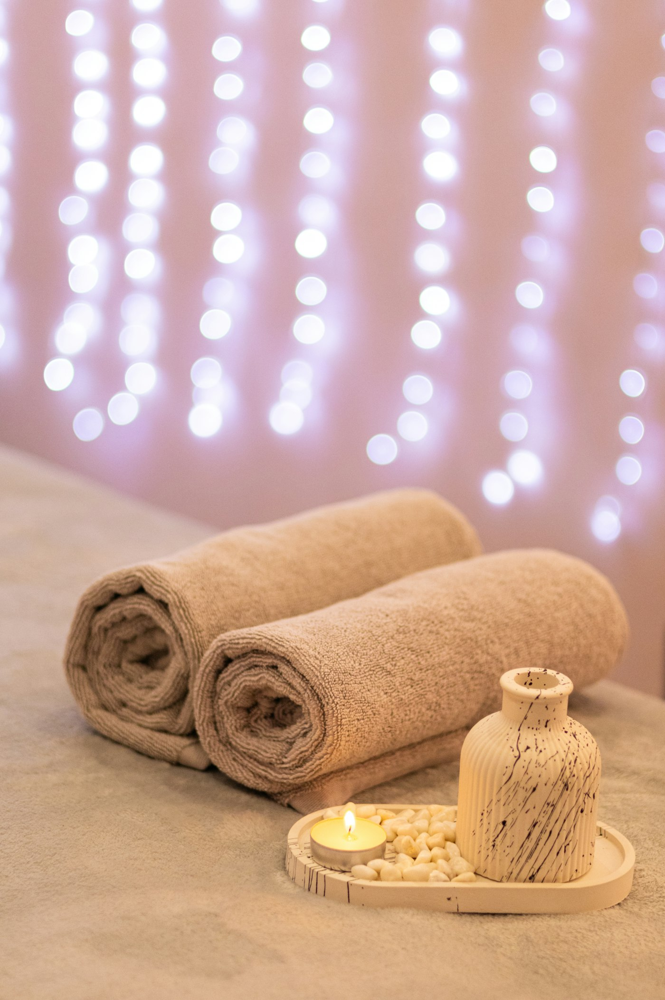
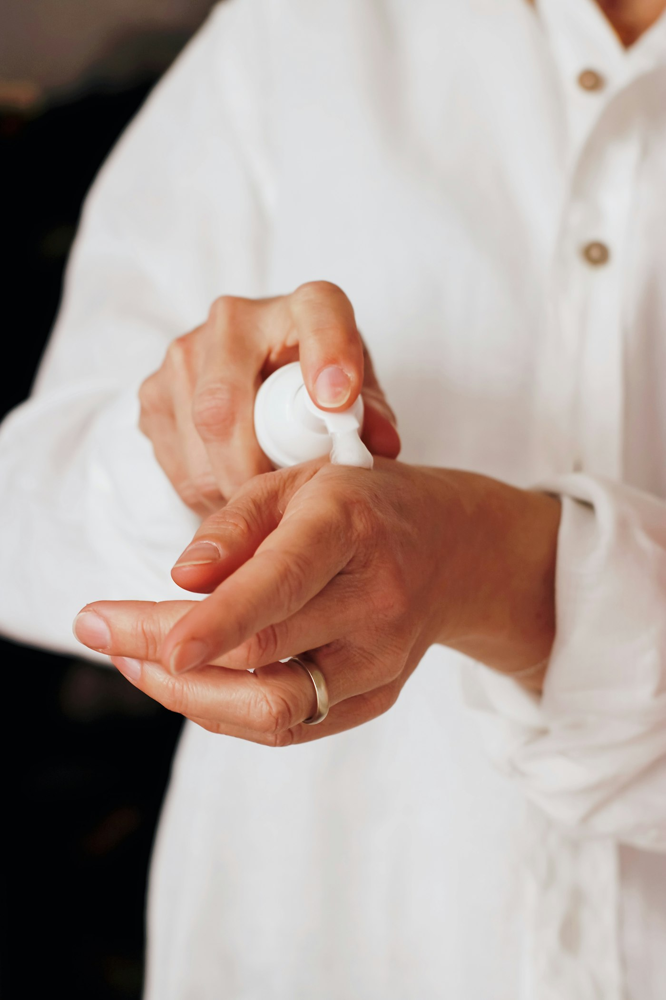
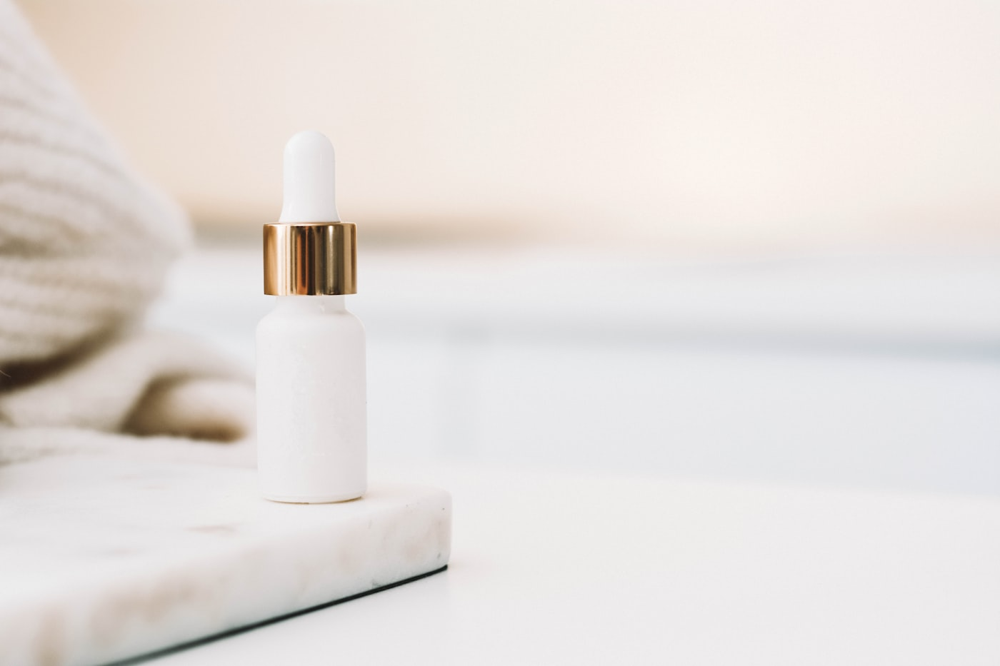

Sensibelchen
„Die Kraft des Meeres" — die Gesichtsbehandlung für empfindliche Haut, die vor allem eines braucht: Ruhe und eine sanfte Hand.
Terminwunsch sendenKimberger · Kosmetik in Sinsheim
Wählen Sie Ihre Behandlung und entdecken Sie einen beispielhaften Ablauf Ihres Besuchs.

Ihre Wünsche besprechen und gemeinsam schauen, was Ihnen heute wichtig ist.
Beispielhafter Ablauf mit Symbolbildern. Die Behandlung wird persönlich abgestimmt.
Zum 1. September 2026
Über 50 Jahre Hautpflege in Sinsheim
Seit über fünf Jahrzehnten steht die Kosmetik-Beauty Farm in der Zwingergasse für sorgfältige Gesichtsbehandlungen — mit Schwerpunkt auf Pflege und Anti-Aging. Jetzt beginnt ein neues Kapitel: Das Institut wird in neue Hände übergeben.
Das Beste daran: Die Gründerin bleibt dem Team erhalten. Vertraute Gesichter, vertraute Behandlungen — behutsam ergänzt um frische Ideen.
Ihre neue Institutsleitung — Vorstellung folgt nach Freigabe.

Behandlungen
Schwerpunkt des Instituts: Gesichtsbehandlungen und Anti-Aging — jede Behandlung beginnt mit einem Blick auf Ihre Haut.
Was beschreibt Ihr Anliegen am besten?
„Die Kraft des Meeres" — die Gesichtsbehandlung für empfindliche Haut, die vor allem eines braucht: Ruhe und eine sanfte Hand.
Terminwunsch senden„Die Kraft des Meeres" — die Gesichtsbehandlung für empfindliche Haut, die vor allem eines braucht: Ruhe und eine sanfte Hand.
Terminwunsch sendenDer Einstieg in die regelmäßige Pflege — die klassische Gesichtsbehandlung für ein straffes, feines Hautbild.
Terminwunsch sendenDie erweiterte Klassik-Behandlung — mehr Vitalität für Ihre Haut und ein strahlendes Hauterlebnis.
Terminwunsch sendenGesichtsbehandlung und Handpflege in einem Termin — eine Auszeit für Gesicht und Hände.
Terminwunsch senden
Zwei Anti-Aging-Behandlungen für anspruchsvolle Haut — welche zu Ihnen passt, klärt das Beratungsgespräch.
Terminwunsch sendenDas Institut
Mitten in Sinsheim, seit Jahrzehnten an derselben Adresse: Im Institut in der Zwingergasse nimmt sich das Team Zeit für Haut, die Aufmerksamkeit verdient — vom ersten Beratungsgespräch bis zur regelmäßigen Pflege.
Auch im neuen Kapitel gilt: Wer hierher kommt, kennt die Hände, denen er sich anvertraut.
Kimberger KosmetikinstitutTelefon und E-Mail folgen nach Freigabe — in dieser Konzeptvorschau bewusst ausgespart.
Gut zu wissen
Das Institut geht in neue Hände über — und bleibt doch in vertrauten Händen: Die Gründerin bleibt dem Team erhalten, und die Behandlungen, die Sie kennen, bleiben im Programm. Die neue Institutsleitung stellt sich nach Freigabe an dieser Stelle persönlich vor.
Das klärt am besten ein kurzes Gespräch vor Ort. Von der Sensibelchen-Behandlung für empfindliche Haut über Klassik und Klassik-Plus bis zu den Anti-Aging-Behandlungen — das Team schaut auf Ihre Haut und empfiehlt ehrlich, was zu ihr passt.
Sie wählen Behandlung und Wunschzeit, das Institut meldet sich zur Bestätigung zurück — ganz ohne Anruf. In dieser Konzeptvorschau ist das eine Demo: Es wird nichts versendet. Fachliche Angaben bleiben nur in diesem Browser-Tab.